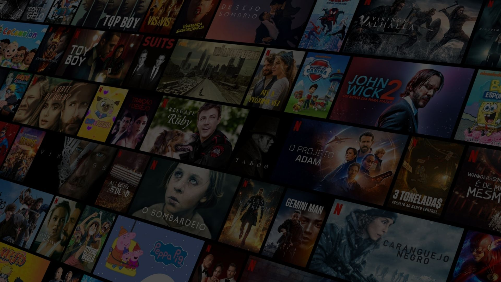

Stranger Things
Stranger Things é uma série de ficção científica criada pelos irmãos Duffer para a Netflix. Situada na cidade ficcional de Hawkins, Indiana, a trama começa no ano de 1983 com o desaparecimento do garoto Will.



Principais Filmes e Séries
Confira os nossos lançamentos
Stranger Things
Stranger Things é uma série de ficção científica criada pelos irmãos Duffer para a Netflix. Situada na cidade ficcional de Hawkins, Indiana, a trama começa no ano de 1983 com o desaparecimento do garoto Will.
Gênero: Ação
Ano de lançamento: 2015